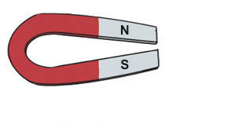
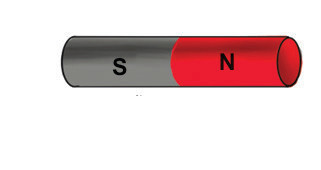
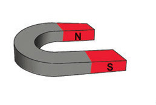
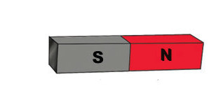
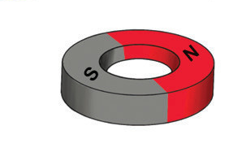

magnets and ring magnets, as seen in Figure 2. Each shape affects how the magnet creates its magnetism. The magnets have different uses in devices depending on their shapes.





Properties of magnets
Magnets show several essential properties that define their behaviour. Some of the properties are:
- (a)Magnets attract things made of iron-related materials.
- (b)The magnetic force is strongest at the poles.
- (c)Like poles repel while unlike poles attract each other.
Activity 3: Investigating the ability of a magnet to attract objects depending on its shape
Materials: Bar magnet, ring magnet, horse-shoe magnet, U-shaped magnet, cylindrical magnet, pins or any kind of iron related objects and a table
Procedure
- 1.Take the pins or any kind of iron-related objects and place them on the table.
- 2.
Take the bar magnet and move its N pole or S pole close to the pins or any kind of iron-related objects. What happened?